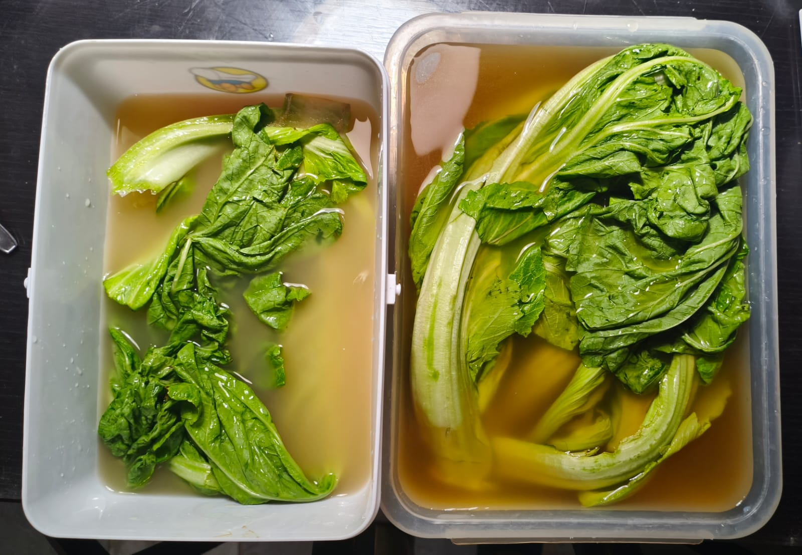

Selamat datang dalam blog fermentasi sayur asam! Blog ini berisi tentang bioteknologi dan fermentasi sayur asam, cara membuat sayur asam, serta profil dari pemilik blog ini.


Bioteknologi adalah cabang ilmu biologi yang mempelajari pemanfaatan makhluk hidup maupun produk dari makhluk hidup untuk menghasilkan barang ataupun jasa. Bioteknologi yang dimanfaatkan dalam pembuatan sayur asam adalah bioteknologi konvensional.
Bioteknologi konvensional adalah bioteknologi yang memanfaatkan organisme secara langsung untuk menghasilkan produk barang dan jasa yang bermanfaat bagi manusia melalui proses fermentasi. Fermentasi adalah proses penguraian metabolik senyawa organik oleh mikroorganisme, melalui hasil aktivitas enzim yang menghasilkan energi dalam sel dengan kondisi anaerobik dan dengan pembebasan gas, yang menyebabkan perubahan biokimia organik melalui aksi enzim.
Sayur asam adalah sayuran fermentasi tradisional yang berasal dari Tiongkok, dibuat dari kubis atau sawi pahit. Cara pembuatan tradisional dari sayur asam diolah terlebih dahulu dan ditumpuk dengan garam ke dalam toples, kemudian difermentasi selama satu bulan pada suhu ruangan. Sayur asam dibuat melalui fermentasi bakteri asam laktat. Sawi pada pembuatan sayur asin difermentasi secara alami dengan air pekat yang diambil dari air cucian beras, garam meja dan gula merah iris serta biasanya ditambah jahe.
1. Toples plastik
2. Kertas lakmus
3. Timbangan digital
4. Sawi pahit
5. Air kelapa
6. Air cucian beras
7. Gula aren
8. Garam
1. Belah sawi pahit menjadi 2 bagian.
2. Keringkan sawi pahit dengan panas matahari hingga kering dan berkerut sedikit.
3. Taruh sawi pahit masing-masing bagian dalam toples plastik berbeda.
4. Tuangkan air kelapa dan air cucian beras ke dalam toples plastik berbeda.
5. Tuangkan 25ml gula aren ke dalam air kelapa dan air cucian beras.
6. Tabur 1 sendok makan garam ke dalam air kelapa dan air cucian beras masing masing.
7. Fermentasikan selama 3-4 hari untuk sawi pahit dengan air kelapa, dan 5-6 hari untuk air cucian beras.
8. Ukur pengamatan organoleptik (aroma, warna, tekstur), dan tingkat keasaman (pH) menggunakan kertas lakmus.